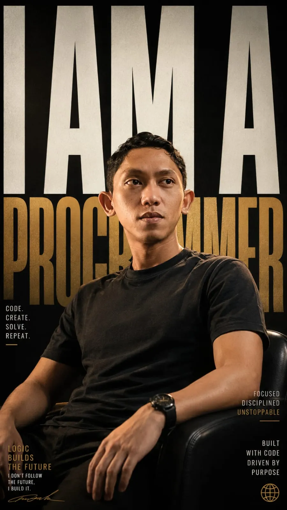

01
FULL-STACK DEVELOPER · AI & AUTOMATION
Designing smarter
digital experiences.
Hi, I'm Adi Setiawan. I build reliable web applications, information systems, and practical AI-powered solutions that simplify the way people work.
Based in Gresik, East Java, Indonesia

ADI SETIAWANDEVELOPER
Making technology useful.
WEB DEVELOPMENT✳INFORMATION SYSTEMS✳AI INTEGRATION✳AUTOMATION
01 / ABOUT MEA thoughtful approach
A thoughtful approach
to building things.
I'm an IT programmer and Full-Stack Web Developer with experience building and maintaining web-based applications, information systems, and digital solutions for business operations.
I work across backend development, frontend interfaces, database management, and system integration. I enjoy learning new technologies, working with teams, and turning complex challenges into practical solutions.
LOCATIONGresik, East Java
EDUCATIONInformatics Engineering
BIRTHDAY5 December 1997
FREELANCEAvailable
02 / TECHNICAL SKILLSTECHNOLOGIES & CAPABILITIES
A versatile
technical toolkit.
The technologies I use to build reliable, efficient, and maintainable digital products.
02
Frontend & Web
03
Data & Infrastructure
03 / AI & AUTOMATIONIntelligence that
Intelligence that
solves real problems.
Applying AI and automation to connect information, streamline workflows, and help systems work smarter.
AI Integration
Building AI-powered features with LLMs and APIs.
OpenAI API · LLMRAG & Knowledge Systems
Connecting AI responses with structured knowledge and trusted documents.
RAG · RetrievalWorkflow Automation
Automating multi-step processes and integrating business systems.
n8n · Webhooks · APIsPrompt Engineering
Designing reliable instructions and structured outputs for AI workflows.
Prompts · Structured JSONFROM IDEAS TO IMPLEMENTATIONADI / AI
04 / EXPERIENCE & EDUCATION
The journey
so far.
Experience across enterprise web development and a foundation in informatics engineering.
WORK EXPERIENCE
Web Developer
Kokola GroupDeveloping and maintaining web-based applications, collaborating with teams to deliver solutions based on department requirements.
Full-Stack Web Developer
Kokola GroupAnalyzing business needs and building integrated, optimized web and mobile applications to support operational processes.
EDUCATION
Bachelor of Informatics Engineering
2018 — 2022Universitas Muhammadiyah Gresik
Undergraduate studies in informatics engineering.
“
Always learning, always building, and always improving the way technology supports people.
05 / SELECTED WORKA GLIMPSE INTO MY PROJECTS
Projects made
with purpose.
A selection of web applications, information systems, and mobile interfaces from my original portfolio.
Project images are extracted from the existing portfolio screenshot. Original high-resolution images and confirmed project titles can be added later.
06 / GET IN TOUCHHave an idea?
Have an idea?
Let's build it.
Have a project in mind or want to connect? I'd be glad to hear from you.
adisett57@gmail.comSEND A MESSAGE